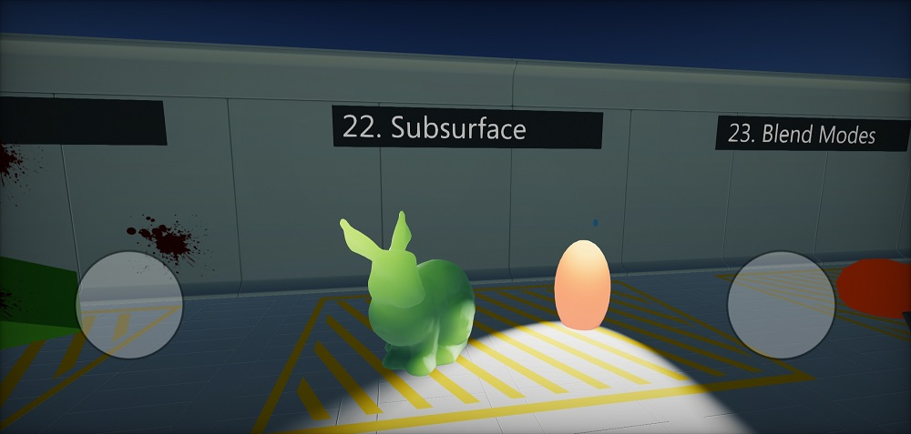

Android

Technical information
Flax is compiled for Linux platform using Android NDK and build with Android SDK. Supported are system version Android 7 or newer (platform API level 24). Flax uses Vulkan for rendering graphics on Android (min. Vulkan 1.0).
Android Setup
Follow these steps to setup your development PC for building game for Android platform. In case of problems, please follow official documentation of Android platform.
- Download and install Android Studio (https://developer.android.com/studio)
- Install Android SDK within Android Studio setup.
- Set
ANDROID_HOMEenv var to SDK location (typicallyC:\Users\USERNAME\AppData\Local\Android\android-studio\sdkon Windows)
- Install NDK
- via Android SDK Manager: Android SDK -> SDK Tools -> NDK (side by side)
- or manually via https://developer.android.com/ndk/downloads/index.html and set
ANDROID_NDKenv var to install location
- Install Java
- use in-built from Android Studio: set
JAVA_HOMEenv var to<android-studio>\jbr - or download manually from https://jdk.java.net/19 and set env var
JAVA_HOMEto jdk root folder
- use in-built from Android Studio: set
- Install .Net Android Workload
- Run
dotnet workload install androidvia command line - More info: https://learn.microsoft.com/en-us/dotnet/core/tools/dotnet-workload-install
- Run
- (when using Flax from Launcher) Install Android Platform Tools for Editor installation via Flax Launcher
Troubleshooting
- Ensure to accept software licenses from Android SDK
- Verify that environment variables are properly set:
- On Windows:
echo %ANDROID_HOME%,echo %JAVA_HOME% - On Linux/Mac:
echo $ANDROID_HOME,echo $JAVA_HOME
- On Windows:
- If you're getting the error
Missing NET SDK runtime for Android ARM64.then install Android workload for dotnet (as mentioned above). It contains .Net libs and runtime for Android required to run C#.
Build options
See Game Cooker window.
| Property | Description | ||||||||
|---|---|---|---|---|---|---|---|---|---|
| Output | The built game output folder (relative to the project). | ||||||||
| Show Output | If checked, after building the output folder will be shown in an Explorer. | ||||||||
| Configuration Mode | Game building mode. Possible options:
|
Platform settings
See Android Platform Settings asset.
| Property | Description |
|---|---|
| Package Name | The application package name (eg. com.company.product). Custom tokens: ${PROJECT_NAME}, ${COMPANY_NAME}. |
| Permissions | The application permissions list (eg. android.media.action.IMAGE_CAPTURE). Added to the generated manifest file. |
| Default Orientation | The default screen orientation. |
| Textures Quality | The output textures quality (compression). |
| Override Icon | Custom icon texture to use for the application (overrides the default one). |
C++ Debugging
- Install
C++ Android development toolsvia Visual Studio Installer - Build game for android to
.apkand install it on the device - Regenerate scripts projects files
- Set startup project to one named
Android - Edit that project properties:
Debugging -> Package To Launchset your apk path inPackage to Launchand setAdditional Symbol Search Pathsto game cooker output location folder withlibFlaxGame.sofile for the target arch ARM64 (<output>/app/jniLibs/arm64-v8a) - Run the Android project with a debugger on an device
Optionally you can install apk manually and attach to it with
- Use
Debug -> Attach to Android Process - Once debugger is attached you can insert breakpoints and debug the game code
To fix some problems with gdb debugger inside Visual Studio do:
- Add environment variable on Windows
HOME=C:/Users/yourusernamewhereyourusernameis your Windows username - Restart Visual Studio (if opened)
- Create
.gdbinitfile in thatHOMEdirectory with the contents:handle SIGXCPU SIG33 SIG35 SIG36 SIGPWR nostop noprint
Android adb logs collecting
Debug and Devlopment builds are using low-level Android logger to output engine and game logs directly to the adb.
Use .\adb.exe -d logcat Flax:I *:S to listen for game logs on device.
Vulkan debugging
- Build Debug build
- Copy
libVkLayer_khronos_validation.so(optionally other validation libs) fromNDK/sources/third_party/vulkan/src/build-android/jniLibs/arm64-v8ato output Gradle project libs folder (<output>/app/jniLibs/arm64-v8a) - Monitor adb output log with Vulkan Validation layer logs
- Note that game performance will be lower (esp. CPU) due to additional validation of the GPU commands
Additional notes
- Flax exposes Gamepad for Android device at index 0 which can be used to vibrate the device or read the Back key pressed by the user during gameplay
- To enable device vibrations add
android.permission.VIBRATEto the permissions list in Android Platform Settings asset - To enable device network state reading add
android.permission.ACCESS_NETWORK_STATEto the permissions list in Android Platform Settings asset